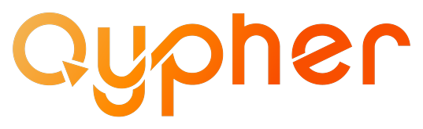
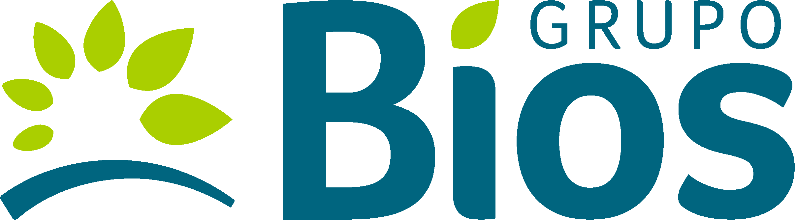
Sesión 4
Harness, Skills y MCP
de la conversación a la ejecución
La última sesión formativa: dejar de programar agentes y empezar a operar uno ya construido.
Stack: OpenCode · Skills · MCP · N8N
De menos a más — cuarta parada
| Sesión | Pregunta |
|---|---|
| S1 | ¿Qué es un agente de IA? |
| S2 | ¿Cómo se construye un agente? |
| S3 | ¿Cómo sabe cosas que no le contamos? (RAG) |
| S4 ← hoy | ¿Y si el agente ya está construido y yo lo opero? |
| S5–S7 | Acompañamiento de proyectos (sin clase) |
Hoy cerramos el ciclo formativo.
Lo que se construye en esta sesión tiene que quedar reutilizable en el proyecto real de cada Champion durante el acompañamiento.
Las tres piezas y el cierre
🤖 El Coding Agent
Un agente ya construido que opera tu computador: lee y escribe archivos, corre comandos, itera solo, pide permiso.
Bloque 1 · transversal
🧩 Skills
Procesos replicables, deterministas, procedimentales que el agente carga cuando los necesita. Conocimiento empaquetado.
Bloque 2a
🔌 MCP
El protocolo estándar para conectar capacidades externas (issues, diagramas, bases de datos) sin escribir el código de la integración.
Bloque 2b
⚡ Cierre — n8n-cli + harness
El harness arma un flujo de n8n hablando en 3-5 minutos. Lo que antes tomaba 20-30 min de arrastrar nodos.
¿Y si el agente ya está construido?
Hasta hoy programamos agentes: escribimos el loop, definimos las tools, montamos la memoria. Ese es el rol con un framework (LangGraph, visto en S2).
Hoy cambiamos de rol: operamos. Un harness es un agente ya construido que vive sobre el sistema de archivos y la terminal.
Lo que ya sabe hacer
- Lee y escribe archivos
- Corre comandos de terminal
- Itera solo hasta terminar la tarea
- Pide permiso antes de acciones sensibles
El mapa de la sesión
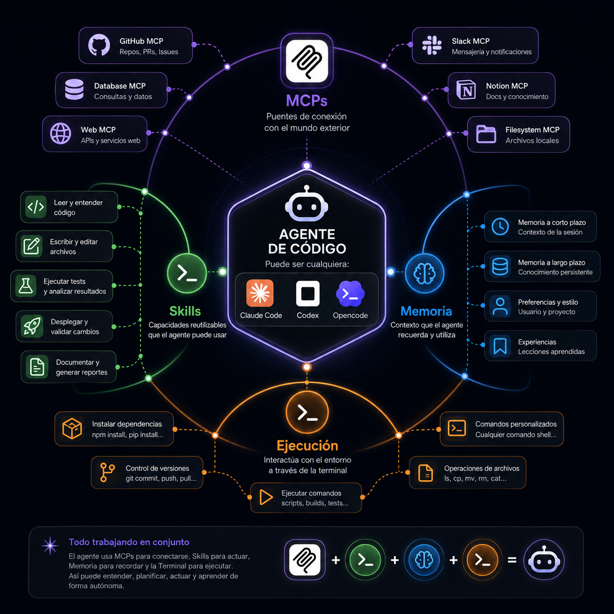
El agente de código al centro — puede ser Claude Code, Codex u OpenCode. Alrededor, las piezas que recorremos hoy: Skills, MCPs, memoria y ejecución sobre la terminal.
Framework vs. Harness
Framework (LangGraph, CrewAI…)
- Librería que tú programas
- Tú ensamblas el loop, las tools, la memoria
- Construyes el agente desde cero
- Control total, más trabajo
Harness (Claude Code, Codex, OpenCode)
- Agente ya construido que tú operas
- Ya sabe leer archivos y correr comandos
- Lo extiendes con Skills y MCP
- Menos control, más velocidad
El harness no reemplaza al framework — resuelve un problema distinto: operar el computador, no programar el loop.
Cómo "piensa" un harness
El mismo loop agéntico de S2 — ReAct — pero aplicado al sistema de archivos y la terminal, no a tools sueltas.
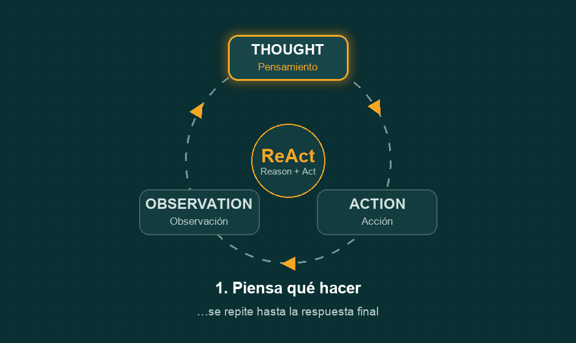
La pieza nueva: el permiso
Antes de escribir un archivo o correr un comando sensible, el harness te lo muestra y pide aprobación. Tú siempre tienes la última palabra. Por eso es seguro para operar.
AGENTS.md — el contexto del proyecto
El harness lee solo un archivo de contexto al arrancar: AGENTS.md. Es el system prompt del proyecto.
Instrucciones de fondo que el harness carga en cada turno: quién es el cliente, quiénes son los participantes, qué ya dimos, qué falta, qué convenciones seguimos.
El nombre depende del harness: OpenCode y Codex leen AGENTS.md; en Claude Code el equivalente se llama CLAUDE.md. Mismo patrón, distinto nombre.
Autorreferencial: el AGENTS.md de este repo es el ejemplo. Lo que el harness carga al operar la formación es justamente el documento que ustedes están leyendo.
# AGENTS.md — Formación Grupo Bios en IA
> Para qué es este archivo. Cada vez que hablemos
> de las formaciones, este documento es el contexto
> de fondo…
## 1. El cliente
Grupo Bios — líder del sector Agro en Colombia…
## 2. Los participantes
Núcleo técnico (~4) + Champions no-software (~11)…
## 9. Convenciones
- Idioma: español
- Datos sintéticos siempre
- Audiencia dual: código + n8nTres harnesses, un patrón
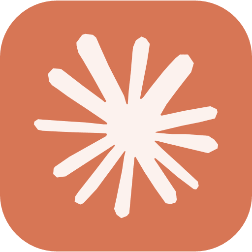
Claude Code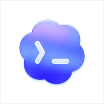
Codex (OpenAI)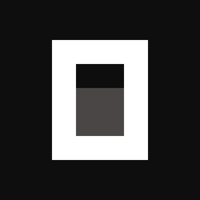
OpenCodeHoy operamos OpenCode — pero lo que ven se replica con cualquiera. Cambias el binario, no el patrón.
Práctica transversal — todos operan
Una tarea cotidiana, sin código.
- Técnicos y no-técnicos juntos
- Nadie escribe una línea de código
- El harness lee, decide, pide permiso, escribe
Cambien "notas" por "informes de mi área"
Si en vez de practica-transversal/ apuntan el harness a la carpeta de informes de Mantenimiento, Compras, Logística o Producción — el harness hace lo mismo. Organiza, redacta, formatea. Sin que nadie programe nada.
¿Y si quiero que siempre sepa hacerlo?
Acabo de decirle al harness cómo organizar el acta — una vez, en lenguaje natural.
¿Y si quiero que siempre sepa organizar actas de esa manera, sin repetírselo? ¿Y si quiero que cargue un par de scripts que ya escribí para extraer action items?
Eso es una Skill.
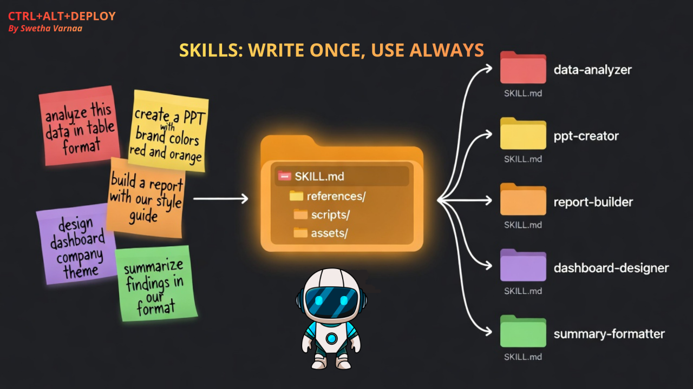
Qué es una Skill
Una Skill es un paquete de conocimiento procedimental que el harness carga cuando la conversación entra en su dominio.
No es una tool (eso era S2). No es un documento (eso era RAG, S3). Es conocimiento empaquetado que dice al harness "cuando te pidan X, haz así".
🔁 Replicable
La misma Skill sirve en cualquier proyecto donde el dominio aplique.
🎯 Determinista
Los pasos que indica son claros, no creativos.
📋 Procedimental
Describe cómo hacer algo, paso a paso.
Para qué sirven
Repetibilidad
Una vez que defines "cómo se organiza un acta", el harness lo hace igual cada vez, sin que se lo vuelvas a explicar.
Empaquetar contexto
Lleva consigo instrucciones, archivos y scripts. El harness no parte de cero cuando entra en el dominio.
Compartir entre equipos
Una Skill se versiona en git. Tu equipo hereda el mismo procedimiento, sin que cada uno lo redescubra.
En sus proyectos de Bios: la Skill "analista operativo" orquesta bios_ops.db + el vector store de OpenAI. La adapta al dominio, no la reescribe.
Anatomía de un SKILL.md

Tres partes, igual que un archivo de config:
name, description, when (cuándo se activa), context (qué archivos carga).
El system prompt específico de la Skill. No reemplaza al AGENTS.md; lo complementa cuando la Skill está activa.
Lo que la Skill puede traer consigo: funciones Python, documentación, ejemplos. El harness los invoca como herramientas.
La carpeta de una Skill
📄 Solo SKILL.md es obligatorio
Lo demás se agrega según lo que la Skill necesite llevar consigo.
📦 Todo viaja junto
Instrucciones, scripts y plantillas en una sola carpeta versionable en git.
⚡ Carga on-demand
El harness la activa solo cuando la conversación calza con su dominio.
Cómo se construyen · Dónde se guardan
Cómo se construyen — un archivo SKILL.md + los scripts que necesite.
---
name: analista-operativo-bios
description: Respuesta a preguntas de
operaciones de Grupo Bios…
when: >
Se activa cuando la conversación
trata sobre operaciones de planta,
mantenimiento, compras, logística…
context:
- tools/bios_ops.py
- tools/rag.py
---
# Instrucciones (el system prompt de la Skill)
Eres un analista operativo de Grupo Bios…
NUNCA inventes una cifra operativa…Dónde se guardan — dos modos:
📁 Local del proyecto
Dentro del repo, en ./skills/ o donde el harness escanea. Viaja con el proyecto — quien clona, hereda.
🌍 Global
En el directorio global del harness. Disponible en cualquier proyecto. Útil para Skills transversales (tu flujo de git, tu estilo de PR).

El harness las detecta solo — no hay que "cargarlas" manualmente. Si el when calza, se activa.
Práctica: "analista operativo"
Construimos en vivo una Skill que orquesta las dos fuentes que ya tenemos:
- bios_ops.db (S1/S2) — datos estructurados
- Vector store de OpenAI — documentos, políticas, manuales
La Skill decide cuál fuente consultar según la pregunta. Y cuando la pregunta cruza — llama las dos.
Red de seguridad: la Skill ya está construida y probada en skill-analista-operativo/. Si la reconstrucción en vivo falla, cargamos la preconstruida.
"¿Cuánto maíz le queda a Itagüí?" → bios_ops.py
"¿Procedimiento si el molino supera 5.5 mm/s?" → rag.py
"¿El retraso del PD-24-00871 es por materia prima o por equipos?" → ambas
¿Y si quiero conectar herramientas externas?
Las tools de la Skill son funciones que tú escribes (bios_ops.py). El RAG es un endpoint que tú levantas (S3).
¿Y si lo que quieres es que el harness liste tus pendientes en el gestor de tareas, o dibuje el diagrama de un proceso — sin programar una integración?
Eso es un MCP.
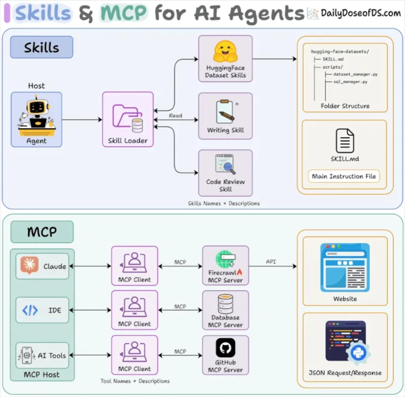
Qué es MCP
Model Context Protocol — un estándar abierto para que cualquier agente hable con cualquier herramienta externa, sin que tú escribas el código de la integración.
Tú configuras la conexión (auth, alcance). El harness hace el resto: descubre qué puede hacer el servidor MCP y lo invoca como una herramienta más.
Un conector estándar. Antes cada sistema tenía su cable; ahora todos hablan el mismo protocolo.
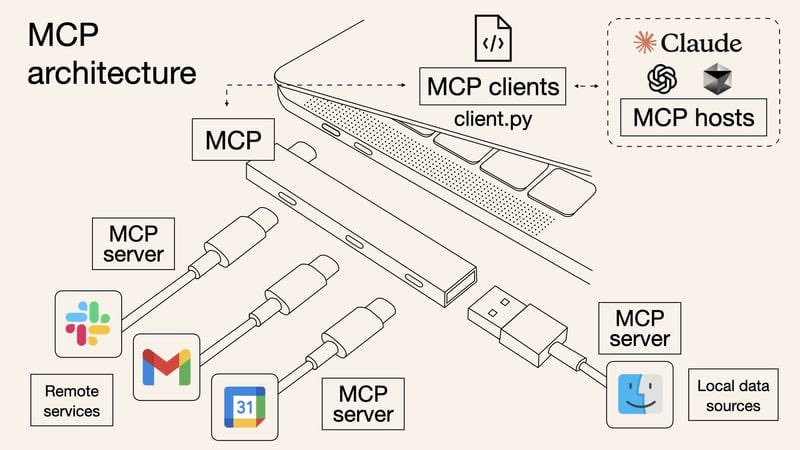
Anthropic, 2024 — abierto y adoptado por OpenAI, Cursor, Claude Code, OpenCode…
Por qué se creó
El problema M×N.
Antes de MCP: si tenías M agentes y N herramientas, necesitabas escribir M×N integraciones. Cada agente hablaba cada herramienta de forma distinta.
Con MCP: cada herramienta expone un servidor MCP. Cada agente habla un protocolo. Total: M+N. No M×N.
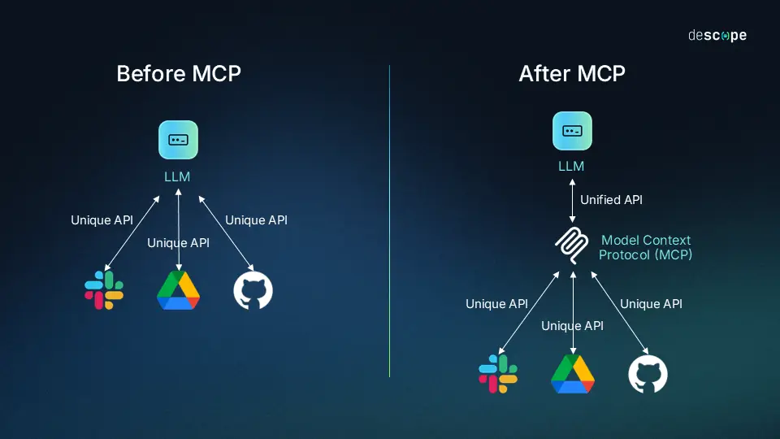
El estándar de comunicación · Dónde se guarda
Es el estándar porque lo adoptaron todos los harnesses principales — Claude Code, Codex, Cursor, OpenCode. Escribes un servidor MCP una vez y sirve para todos.
Dónde se guarda / configura:
- El servidor MCP es un proceso (local o remoto) que expone capacidades
- La configuración vive en el archivo de config del harness (no en
.envdel repo) - La auth (OAuth, service account, API key) va en ese mismo config — nunca en git
El harness descubre las capacidades del servidor MCP al arrancar — no tienes que declararlas a mano.
// config del harness (conceptual — fuera del repo)
{
"mcp": {
// remoto, sin credenciales — solo la URL:
"drawio": {
"url": "https://mcp.draw.io/mcp"
},
// con auth — el token vive aquí, nunca en git:
"linear": {
"command": "npx",
"args": ["-y", "<servidor-mcp-linear>"],
"env": {
"LINEAR_API_KEY": "<token>"
}
}
}
}🔒 La auth nunca va en git. Si se expone, rota al instante — borrar el commit no basta.
Práctica: dos MCPs
Linear MCP
Referencia — "así lo usamos nosotros"
Leemos issues de Linear, nuestro sistema de gestión de trabajo. Caso de uso real de la agencia: el harness lista los pendientes hablando.
draw.io MCP
Demo en vivo — diagramas hablando
El harness dibuja el proceso de un dominio de Bios con la tool create_diagram (XML de draw.io o Mermaid) y lo deja listo para editar en draw.io.
Endpoint oficial alojado (mcp.draw.io/mcp) — sin cuenta ni credenciales.
El harness arma el flujo hablando
Antes: 25 min arrastrando nodos.
Hoy: 4 min hablando.
En vivo, con el harness conectado a la CLI de n8n, le pedimos que arme un workflow sobre uno de los cuatro dominios de Bios.
- El harness invoca la CLI: crea, configura, activa
- Disparamos el webhook → el flujo corre
- Escribe su salida en una hoja de cálculo vía nodo nativo de n8n
El harness no reemplaza n8n — lo opera. n8n sigue siendo donde vive el flujo.
Plan B: si el harness no responde en 60 s, se importa n8n/plantilla-cierre-rescate.json y se narra. Nunca se presenta la plantilla como armada en vivo.
Las tres piezas en una frase
🤖 Pieza 1 · Coding Agent
Un agente ya construido que opera tu computador. El loop y las tools básicas ya vienen incluidas.
🧩 Pieza 2 · Skills
Conocimiento procedimental empaquetado que el agente carga cuando entra en un dominio. Tú lo escribes una vez.
🔌 Pieza 3 · MCP
El protocolo estándar para conectar herramientas externas sin escribir el código de la integración.
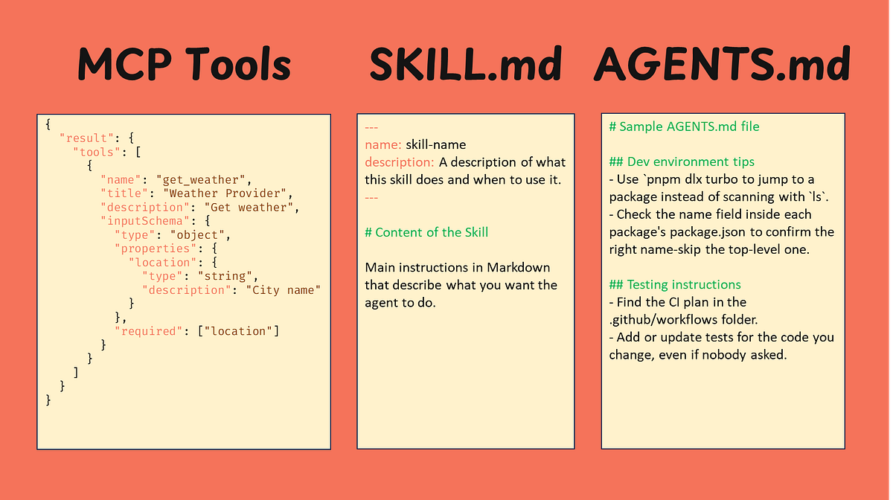
Las tres piezas, vistas como los archivos que el harness consume: tool MCP · SKILL.md · AGENTS.md
Agente + Skill + MCP = el patrón que van a operar en sus proyectos reales durante el acompañamiento.
Tres entregables
✅ Una Skill funcionando
La "analista operativo" cargada en tu harness, probada con una pregunta de tu dominio.
✅ Una automatización n8n
Creada con el harness + CLI de n8n. El flujo del cierre u otro equivalente sobre tu dominio.
✅ La guía de instalación
INSTALL-HARNESS-N8N-CLI.md — paso a paso, reproducible sin el facilitador.
La próxima ya no hay clase
Ustedes con su proyecto real.
Nosotros para resolver dudas, revisar avance, orientar decisiones.
Los tres entregables de hoy son la base. Si algo traba, lo resolvemos ahí.